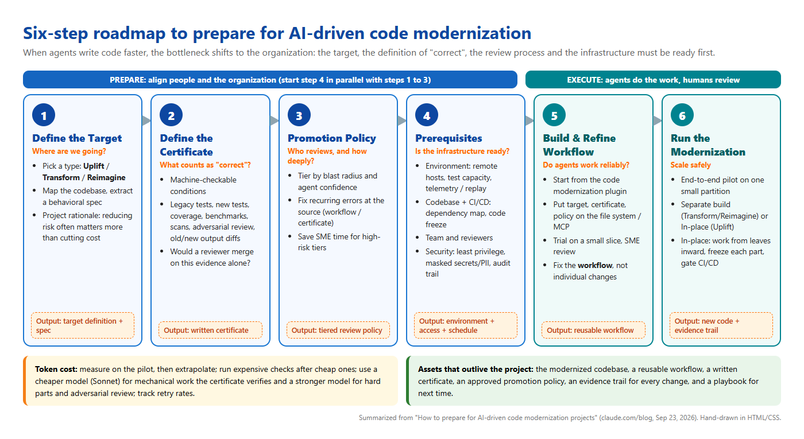
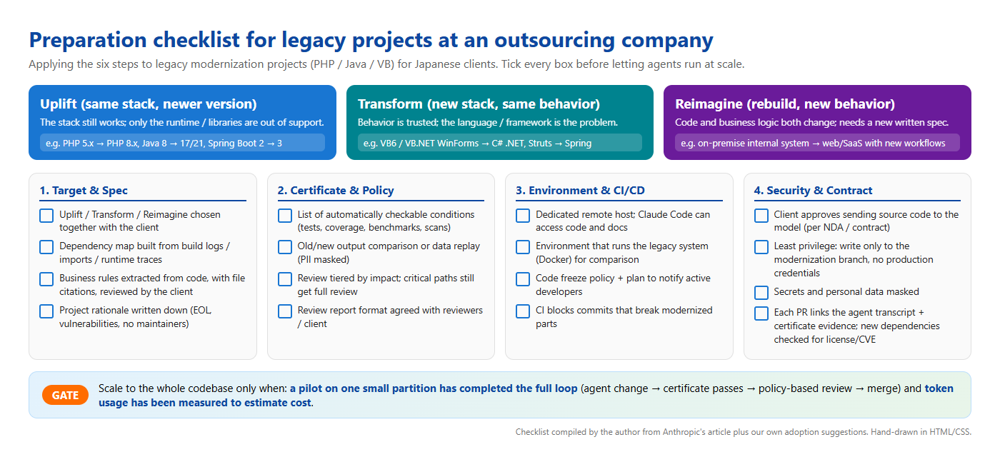

A summary of the six preparation steps from Anthropic's article — and how I plan to apply them to legacy PHP / Java / VB migration projects for Japanese clients at Scuti AI
How to prepare for AI-driven code modernization projects (Claude blog, September 23, 2026, by Jonah Ezekiel & Lexie Tonelli) starts from a simple observation: with agents such as Claude Code, writing the changes for a modernization can take weeks or months instead of years. The organization around those changes — who reviews, where tests run, who owns production risk — does not speed up on its own.
The article proposes a six-step framework plus a note on token cost:
Before the agent does anything, answer: what does the system look like when we are done? The answer picks the modernization type, and each type needs a different level of detail in its target.
| Type | Meaning | Choose when | Target to define |
|---|---|---|---|
| Uplift | Version upgrade within the same stack (article example: C++11 → C++20) | The stack is still viable, but runtimes are end-of-life, vulnerabilities are unpatched, or dependencies can no longer be upgraded | Runtime version + package set |
| Transform | Rewrite on another stack, behavior stays fixed (e.g. COBOL → Java) | The stack itself is the problem, but the behavior is trusted | Uplift + language, frameworks, architectural conventions |
| Reimagine | Greenfield rebuild, behavior changes too | Both behavior and code need to change | Transform + a written behavioral spec for the new system |
The key work here is finding out what the legacy code actually does, which often differs from the documents. This surfaces forgotten business logic and edge cases. Claude can map dependencies and document workflows; the code modernization plugin's assess, map and extract-rules commands mine business rules with source citations for human review.
The article stresses that risk reduction is often a bigger benefit than cost reduction: unpatched vulnerabilities, unsupported runtimes and a shrinking pool of engineers who know the old stack.
The certificate is the set of conditions or tests that every change must meet, and it must be checkable without a human. It is what lets an agentic workflow iterate on its own or flag a change for human review.
Build the certificate with the people who will review and promote changes (developers, user groups, business leads). A good test: “Would they comfortably merge based on the certificate evidence alone?”
| Type | What the certificate is anchored on |
|---|---|
| Uplift | Parity with the original codebase; the original test suite is the core |
| Transform | Parity with the original too, but old tests rarely run on the new stack → production traffic replay, old-vs-new differential testing, prod-parallel deployment |
| Reimagine | The behavioral spec: tests written from the spec, adversarial reviews against the spec, differential checks where old behavior is kept. Expect to revise the certificate as the spec matures |
Agents can produce far more changes than humans can review line by line at the same depth. The promotion policy is a tiered review path, agreed in advance, that sets how deep human review goes based on each change's characteristics.
This step pulls in teams outside the modernization: platform/infrastructure, QA/release engineering, security/compliance. The article advises opening those conversations early, while Steps 1–3 are still underway, because this is usually where the waiting happens.
| Area | What to prepare |
|---|---|
| Environment | A dedicated remote host for the workflow, with the codebase and relevant sources reachable by Claude; test capacity required by the certificate; systems that strengthen the certificate (production telemetry, a prod-parallel setup, production data for replay) |
| Codebase & CI/CD | A dependency map grounded in build logs, import analysis or runtime traces; planned treatment of dependencies and packages as part of the target; a compatibility check ready for CI/CD; an agreed code-freeze policy for in-place work; a communication plan for active developers |
| Teams & review | Agreement from dependent teams to take part (certificate sign-off, promotion policy review); allocated reviewer time |
| Security & compliance | An approved model access path for using Claude Code on source code; least privilege (write only to modernization branches, no production credentials); secrets and PII scrubbed or masked; every change traceable via a PR linked to the agent transcript and certificate evidence; license and vulnerability checks on new dependencies |
Build a dynamic workflow in Claude Code, starting from the code modernization plugin.
Put everything it needs on the file system or behind MCP: target, certificate, promotion policy, codebase, documentation, data sources and tooling.
Run it on a small part of the codebase; have SMEs review the changes, the agent's process and the certificate evidence.
When something is wrong, fix the workflow, not individual changes. The goal is confidence that, at scale, changes will meet the certificate consistently and reviewers will approve them comfortably under the policy.
Run one full cycle end to end on a small partition — including review and landing under the promotion policy. Fix issues while they are cheap, repeat until confident, then scale to the full codebase.
| Deployment model | Fits | How |
|---|---|---|
| Separate build | Transform, Reimagine | Build the target alongside the existing system, cut over when complete |
| In-place | Uplift (systems that cannot go down, or change too fast to keep a separate copy) | Split the codebase into logical partitions from the leaves inward; freeze and modernize one partition at a time; gate CI/CD so new commits cannot undo modernized partitions |
The article is candid that token usage varies widely. The main drivers:
The article links to the code-modernization plugin in anthropics/claude-plugins-official. I also read the plugin README (a secondary source, not part of the article) for more detail:
modernize (captures intent in INTENT.md) → modernize-preflight → modernize-assess → modernize-map → modernize-extract-rules / modernize-review → modernize-brief → uplift / transform / reimagine → modernize-verify → modernize-harden.modernize-verify returns PROVEN / PARTLY PROVEN / NOT PROVEN per module — very close to the article's “certificate” idea.Edit(/legacy/**)), secrets go to a gitignored file, analyzed code is treated as untrusted, and nothing is auto-committed.I put the six steps, the main question and the output of each step into one diagram to use at project kick-off (diagram labels are in Vietnamese for my team):

Scuti AI is an outsourcing company in Vietnam; many of our Japanese clients run legacy systems (old PHP, Java/Struts, VB6/VB.NET). Below is how I propose to apply the six steps — this is my own plan, not yet an official company process.
| Step | Concrete application |
|---|---|
| 1. Target | At the estimation stage, classify clearly with the client: PHP 5 → PHP 8 or Java 8 → 17 is Uplift; VB6 → C#/.NET is Transform; “rebuild the system around a new process” is Reimagine. Legacy specification documents (仕様書) are often outdated → use Claude Code / the plugin to extract business rules from code with file citations, then share a summary for the client to confirm. |
| 2. Certificate | Make the certificate part of the acceptance criteria (受入基準) in the contract / test plan: old tests pass, old-vs-new output comparison on the same dataset, clean security scan, benchmarks no worse. Japanese clients are very quality-focused, so automated evidence is an advantage. |
| 3. Promotion Policy | Agree with PM/BrSE and the client: money, tax calculation and authorization modules → full review; mechanical changes (deprecated APIs, syntax) → sampled review. Use a fixed review report format (Vietnamese–Japanese if needed). |
| 4. Prerequisites | Ask the client in week one: may AI be used on the source code (NDA/contract), is there a staging environment / test data with personal information (個人情報) masked, who signs off on their side. Containerize the old system with Docker for comparison runs. |
| 5. Workflow | Build the workflow in an internal repo with the code-modernization plugin; keep INTENT.md, the certificate and the policy in the repo so every member (and the agent) reads the same source. |
| 6. Run | Pick one small, low-dependency module as the pilot; measure tokens/time to estimate the rest more accurately. If the client keeps developing in parallel, go in-place with per-partition code freeze. |
The checklist I use before letting an agent run at scale (combined from the article plus my own proposals for the outsourcing context):

The video walks through how I read the article and pulled this summary together: opening the original article, scrolling through the key steps, opening the plugin page, showing both diagrams and ending on the finished blog.